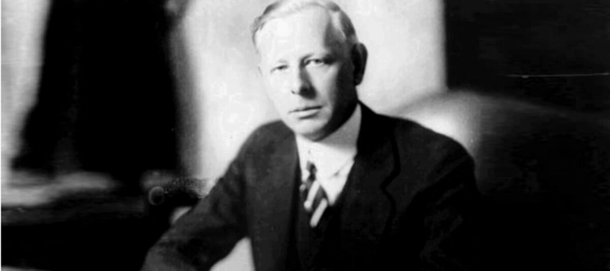

Я много раз видел, как трейдеры угадывали направление, но не могли дождаться развития движения. Они входили выходили, снова входили. Их выносила суета. Самое трудное в трейдинге - сидеть спокойно, когда ты уже прав. Мне потребовались годы, чтобы понять этот урок. Сложность не в том чтобы открыть позицию, сложность иметь дисциплину. Дождаться момента, когда рынок действительно готов дать большую прибыль. Терпение - это искусство, а не пассивность. И чем дольше живешь в рынке, тем больше понимаешь: хороший трейд случается редко. Отличный - еще реже. И если ты не сможешь ждать, ты не сможешь заработать.
Я никогда не увеличивал позицию, если он шла против меня. Я добавлялся только тогда, когда рынок подтверждал мою правоту. Когда цена двигалась в мою сторону, я использовал это движение как доказательство силы. Большинство трейдеров делают наоборот: они добавляют к убыткам и боятся добавлять к прибыли. Но если вы уверены в своей позиции, и рынок подтверждает ее движением, логично увеличивать ставку. Я зарабатывал большие деньги не на первом входе, а на правильном увеличении позиции.
рыночные приметы
- Газеты "поют" хором - Тренд близок к финалу.
- Брокерские конторы полны новичков - Впереди паника.
- Рост без откатов - Это не сила, а лихорадка.
- Цена растет, а объем падает - Покупатели кончились.
- Сосед советует купить акцию - Я ищу точку для продажи.
- Чувствуешь эйфорию - Готовься к удару.
- Хорошие новости, а цена не растет - Конец подьема.
- Прорыв уровня без возврата - Серьезный сигнал тренда.
- Молишься о развороте в убытке - Значит уже проиграл.
Рынок никогда небывает не прав. Не правым может быть только трейдер. Когда цена идет против вас, это не рынок "ошибается". Это рынок сообщает вам информацию. Я много раз разорялся не потому, что был глуп, а потому что спорил с рынком. Я хотел доказать, что моя точка зрения верна. Но рынок не слушает аргументов. Он либо подтверждает вашу позицию, либо уничтожает ее. Единственный разумный шаг, когда рынок показывает, что вы не правы, - отойти в сторону.
Цитаты
О психологии и дисциплине
- "Самый серьезный враг трейдера - это он сам."
- "Рынки никогда не меняются, потому что не меняются люди."
- "Главная задача трейдера - побороть свои эмоции."
- "Эмоции - твой худший враг в трейдинге."
- "Страх и жадность - два самых сильных врага на рынке."
- "Трейдинг требует ясного и холодного ума на рынке."
- "Успешный трейдер должен быть терпеливым и дисциплинированным."
- "Научитесь не слушать других. Слушайте только рынок."
- "Лишь немногие трейдеры понимают, что рынки управляют эмоциями."
- "Мое умение терпеть было важнее моего интелекта."
- "Нетерпение приводит к потере денег."
- "Если вы не можете контролировать эмоции, вы не сможете контролировать деньги."
- "Рынок всегда проверяет твою эмоциональную устойчивость."
- "Трейдер должен постоянно работать над собой."
- "Трейдеры проигрывают, когда позволяют эмоциям доминировать."
- "Всегда принимайте решения на холодную голову."
- "Сначала дисциплина, потом деньги."
Об управлении капиталом и рисках
- "Режь убытки быстро, а прибыли дай расти."
- "Никогда не добавляйте к убыточной позиции."
- "Лучше понести небольшой убыток сразу, чем большой потом."
- "Маленькие потери - часть трейдинга."
- "Поймай пять маленьких стопов, но избегай одного большого убытка."
- "Всегда знай где выход, прежде чем войти в сделку."
- "Не рискуйте больше, чем можете себе позволить потерять."
- "Терять деньги можно быстро, а зарабатывать - долго."
- "Риск должен быть оправдан возможной прибылью."
- "Контролируйте риск, иначе рынок проконтролирует вас."
- "Всегда ставь защитные стопы. Всегда."
- "Никогда не рискуй всем капиталом сразу."
- "Потери неизбежнф, главное не дать им стать фатальными."
- "Никогда не усредняйся против рынка."
- "Умение признавать убытки - признак профессионала."
О входе и выходе из сделок (тайминг)
- "Правильное время важнее всего."
- "Не нужно покупать на падении и продавать на росте."
- "Всегда ждите подтверждения тренда перед входом."
- "Цена никогда не бывает слишком высокой для покупки и слишком низкой для продажи."
- "Лучший сигнал - это пробой уровня с большим объемом."
- "Я покупаю только тогда, когда рынок подтверждает мою правоту."
- "Никогда не торопитесь входить в рынок."
- "Покупай дорого, продавай еще дороже."
- "Самое дорогое - войти слишком рано, или выйти слишком поздно."
- "Если движение реальное, оно не вернется обратно."
- "Не бойтесь покупать дороже, если это подтверждает тренд."
- "Главное не быть первым, а быть правым."
- "Лучшие деньги я сделал когда не торговал вообще."
- "Нужно входить в рынок только в ключевых точках."
О тренде и работе по тренду
- "Деньги делаются на трендах, а не на колебаниях."
- "Следуй за трендом, а не против него."
- "Большие деньги приходят, когда вы правильно держите позицию."
- "Не нужно торговать против рынка. Рынок всегда сильнее."
- "Самая прибыльная торговля - по тренду."
- "Если тренд есть, держи позицию, не выходи слишком рано."
- "Тренд не заканчивается, пока рынок не скажет об этом."
- "Всегда проще плыть по течению, а не против него."
- "Большой тренд рождается из маленького пробоя."
- "Тренд - твой лучший друг."
Самостоятельность и личная ответственность
- "Решения принимай сам."
- "Слушать других - самый быстрый способ потерять деньги."
- "Отвечать за свои сделки должен только ты сам."
- "Не позволяй чужим мнениям влиять на твои решения."
- "Трейдер должен быть индивидуалистом."
- "Каждый человек сам ответственен за свой счет."
- "Побеждают те, кто думает самостоятельно."
О терпении в выборе сделок
- "Терпение - залог успешной торговли."
- "Нужно ждать правильного момента."
- "Лучшая позиция иногда не иметь позиции вовсе."
- "Не торгуйте от скуки - торгуйте по сигналу."
- "Если сигнал не очевиден - просто жди."
Финал (Итог)
- "Деньги сами по себе не должны быть целью."
- "Успех измеряется не деньгами, а качеством сделок."
- "Настоящий успех приходит к тем, кто умеет ждать."
- "Деньги - побочный продукт правильных решений."
Диалог
Как я сам себе построил западню после 1929 года.
1) Психология победителя - начало конца.
После октярьского краха 1929 года меня называли гением. Газеты, интервью, поздравления - переизбыток уважения. Это опаснее любого "медвежьего" рынка. Что произошло в голове: я перестал быть учеником рынка и стал комментатором самого себя. Появилось ощущение, что у меня "пропуск за кулисы", будто рынок обязан подтверждать мои идеи. Я путал уверенность с погрешностью.
2) Системная дисциплина дала течь.
Мои правила были просты и суровы, но я начал сгибать их под настроение. Размер позиции рос быстрее, чем росла уверенность данных. Я увеличивал плечо не потому, что сигнал стал сильнее, а потому что "я Ливермор".
Добавление к убыточной позиции это то, чего я не делал в лучшие годы. Пару раз поймал откат и решил, что "рынок должен вернуться". Рынок никому ничего не должен.
Стопы престали быть "границей смысла" и превратились во "временную помеху". Переставлял дальше, "чтобы не выбило шумом". Шум - это было мое оправдание.
3) Информационный шум и тщеславие.
Я всегда жил по цене и объему - они говорят правду. Но в те годы я стал слушать чужие голоса: банкиры, газеты, "дружеские советы".
Вместо ленты - вырезки из газет.
Вместо дневника - бесконечные разговоры.
Итог: входы поздние, выходы еще позднее. Я реагировал на новости, а не на рынок.
4) Переход из "игры в середину" в охоту за вершинами.
В лучшие периоды я забирал середину тренда и уходил. Позже меня тянуло поймать "верх или дно".
Охота за экстремумами заставляла входить против хода слишком рано. Даже когда направление было верным, я выдыхался раньше тренда, а капитала на "до держать" уже не хватало
5)Лестница вниз: мелкие нарушения ➠ Большой провал.
Ни один удар не был смертельным сам по себе. Меня ел компот из мелких нарушений: день без плана - ничего страшного. Добавил "чуть-чуть" к просадке - "последний раз". Через год это стало новой нормой, а потом пришла арифметика: геометрический рост ошибок + плечо = разорение. Чтобы я сделеал иначе (и что тебе делать сейчас). Назад к механике: План до открытия: a, b, c, уровни отмены идеи, размер позиции заранее. Стоп = "точка опровержения", а не "дырка для переносов".
Жесткая математика размера.
Риск ≤ на сделку (даже если "сигнал железный"). Усреднение разрешено только в прибыль(пирамидинг по тренду), никогда в убыток.